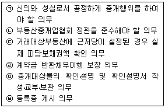
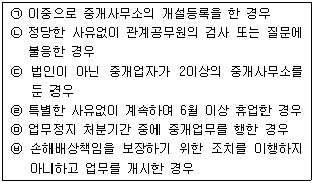
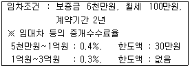
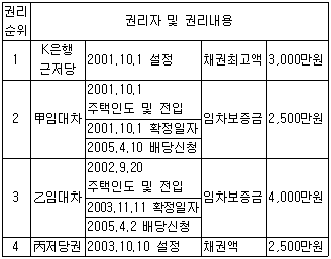
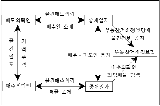
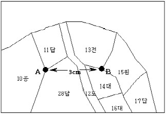
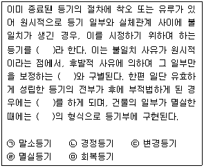
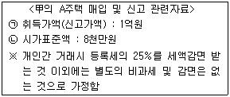

공인중개사-2차 (2005-05-22 기출문제)
1과목: 임의구분
1. 부동산중개사무소 안의 보기 쉬운 곳에 게시하여야 할 게시물이 아닌 것은?
- 등록증
- 손해배상책임을 보장하기 위한 보증설정 서류
- 거래정보망가입확인서
- 공인중개사 자격증
- 중개수수료 및 실비의 요율 및 한도액표
(정답률: 42%)

2. 부동산중개업에 대한 설명으로 틀린 것은?
- 일반중개계약은 관행상 불요식계약이다.
- 수수료 약정을 하지 않고 거래계약을 성사시켰을 경우라도 중개업자는 중개의뢰인에게 수수료를 청구할 수 있다.
- 부동산중개는 재산상의 법률행위인 동시에 부동산의 교환ㆍ매매ㆍ임대차 등의 계약을 중개하는 상사중개이다.
- 금전소비대차에 부수하여 저당권의 설정에 관한 행위의 알선을 업으로 하는 경우에도 부동산중개업에 해당된다.
- 부동산중개업법상 지정받은 거래정보망사업자가 행하는 거래정보사업은 전시중개로 볼 수 없다.
(정답률: 39%)
3. 중개업자의 행정처분에 관한 설명으로 옳은 것은?
- 행정처분에는 과태료ㆍ업무정지ㆍ등록취소ㆍ자격취소가 있다.
- 공인중개사 자격취소 처분을 한 관청은 지체없이 이를 건설교통부장관에게 보고하여야 한다.
- 행정처분청은 처분에 앞서 반드시 청문을 실시하여야 한다.
- 중개사무소 개설등록 취소처분을 받은 자는 3년 이내에 공인중개사 자격을 다시 취득할 수 없다.
- 공인중개사 자격취소처분을 받은 자의 자격증 반납 기한은 처분을 받은 날부터 7일 이내이다.
(정답률: 20%)
4. 합동사무소에 관한 설명으로 옳은 것은?
- 공인중개사인 중개업자와 중개인인 중개업자는 합동으로 중개사무소를 설치할 수 있다.
- 합동사무소에 소속한 중개업자는 합동사무소 이외에 다른 중개사무소를 별도로 설치할 수 있다.
- 합동사무소를 구성하고 있는 중개업자는 개설등록ㆍ인장등록을 각각 하지 않아도 된다.
- 합동사무소 이전시 합동사무소에 소속된 중개업자를 대표하는 중개업자가 일괄 이전신고를 할 수 없다.
- 합동사무소의 운영규약은 등록관청에 신고하여야 한다.
(정답률: 25%)
5. 중개의뢰인의 요청에 의하여 작성하는 중개계약의 표준서식에 규정된 필요적 기재사항이 아닌 것은?(오류 신고가 접수된 문제입니다. 반드시 정답과 해설을 확인하시기 바랍니다.)
- 중개대상물의 상태
- 중개대상물의 규모
- 거래예정가격
- 거래예정가격에 대한 중개수수료
- 중개업자와 중개의뢰인이 준수하여야 할 사항
(정답률: 19%)
6. 중개업자의 결격사유에 해당되지 않는 자는?
- 미성년자
- 한정치산자
- 파산선고를 받고 복권되지 아니한 자
- 도로교통법 위반으로 벌금형의 선고를 받은 자
- 금고 이상의 형의 집행유예기간 중에 있는 자
(정답률: 58%)
7. 중개업자 甲과 그가 고용한 중개보조원 乙에 관한 설명으로 틀린 것은?
- 乙이 고의 또는 과실로 중개의뢰인에게 손해를 끼친 경우에 甲은 손해배상책임을 진다.
- 乙이 업무상 행위로 중개의뢰인에게 손해를 끼친 경우에 甲이 무과실이면 손해배상책임은 당사자인 乙에게 한정된다.
- 乙로 인하여 손해를 입은 중개의뢰인은 甲과 乙에 대하여 연대 또는 선택적으로 손해배상을 청구할 수 있다.
- 乙의 과실로 甲이 중개의뢰인에게 손해배상을 한 경우에는 甲은 乙에게 구상권을 행사할 수 있다.
- 乙이 중개수수료 과다 수수로 벌금형을 선고 받았을 경우 중개사무소 개설등록이 취소될 수 있다.
(정답률: 47%)
8. 공인중개사에 대한 설명이다. 옳은 것은?
- 공인중개사 자격시험 응시자격은 제1차 시험일이 속한 년도에 20세 이상인 대한민국 국민이어야만 한다.
- 자격시험의 응시자가 중개업자 등의 결격사유에 하나라도 해당되면 자격시험에 응시할 수 없다.
- 부정행위자는 그 시험을 무효로 하고 당해 시험일로부터 3년간 응시자격이 제한된다.
- 공인중개사가 아닌 자가 공인중개사 명칭을 사용할 경우 1년 이하의 징역 또는 1천만원 이하의 벌금에 처하게 된다.
- 제1차시험은 실무능력 검정에, 제2차시험은 중개업무 수행에 필요한 소양 및 지식정도의 검정에 중점을 둔다.
(정답률: 30%)
9. 중개법인에 대한 설명으로 옳은 것은?
- 중개업 창업을 준비 중인 일반인들을 대상으로 중개업의 경영기법을 제공하는 것은 중개법인의 업무범위에 속한다.
- 甲 중개법인은 춘천시에 주된 사무소를 두고 부산광역시 동래구에 2개의 분사무소를 설치할 수 있다.
- 중개법인이 분사무소를 개설하고자 하는 경우 여러 명의 소속공인중개사가 있더라도 책임자만 사전교육을 이수하면 된다.
- 乙 중개법인은 A건설회사로부터 380세대의 최초 입주자를 모집하는 아파트 분양대행을 의뢰받았을 때 이를 수행할 수 있다.
- 자본금 1억원인 주식회사 형태의 중개법인은 이사 1인을 두어도 무방하다.
(정답률: 10%)
10. 인장등록에 관한 설명으로 틀린 것은?
- 법인이 아닌 중개업자가 중개행위에 사용할 인장은 인감증명법에 의하여 신고한 인장이어야 한다.
- 중개사무소 개설등록을 한 자는 업무개시 전에 인장등록을 하여야 한다.
- 법인의 분사무소에서 사용할 인장의 경우에는 분사무소 소재지를 관할하는 시장ㆍ군수ㆍ구청장에게 등록하여야 한다.
- 소속 공인중개사 및 중개보조원은 인장등록의무가 없다.
- 중개업자가 인감을 변경한 경우에는 10일 이내에 등록관청에 신고한 후 중개업무를 수행하여야 한다.
(정답률: 29%)
11. 중개업자 등의 금지행위에 관한 설명으로 틀린 것은?
- 중개의뢰인의 대리인과 직접 거래를 하거나 거래당사자 일방을 대리하는 행위는 금지행위에 해당된다.
- 부동산중개업자가 중개대상물의 매매를 업으로 하는 행위는 금지행위에 해당된다.
- 금지행위에 해당되는 위반행위를 한 경우에는 중개사무소 개설등록을 취소하거나 6월 이내의 업무정지를 명할 수 있다.
- 소속공인중개사나 중개보조원이 금지행위에 해당되는 위반행위를 하여 처벌을 받는 경우 중개업자에게는 관련 벌칙규정에 의한 벌금형을 과한다.
- 중개수수료 초과수수 금지의무는 강행규정으로 초과 수수된 중개수수료는 무효이다.
(정답률: 13%)
12. 중개업자의 중개로 거래가 완성되었을 경우 거래계약서 작성과 관련된 내용으로 틀린 것은?
- 필요한 사항을 빠뜨리지 아니하고 확인하여 거래계약서를 작성하고 서명ㆍ날인 하여야 한다.
- 거래계약서는 원칙적으로 중개보조원이 작성할 수 없다.
- 중개업자가 거래계약서를 작성한 때에는 이를 거래당사자에게 교부하여야 한다.
- 중개업자는 그 사본을 3년간 보관하여야 한다.
- 중개의뢰인의 요청이 있는 때에는 중개업자는 거래계약서의 검인을 신청하여야 한다.
(정답률: 31%)
13. 중개계약에 관한 설명으로 틀린 것은?
- 중개계약은 중개대상물의 매매ㆍ교환ㆍ임대차 기타 권리의 득실ㆍ변경을 하도록 하는 중개의뢰인과 중개업자간의 계약이다.
- 중개계약은 구두로 할 수 있으나 전속중개계약 체결시 법정서식을 사용하여야 한다.
- 중개업자와 중개의뢰인 숫자에 따라 공동중개계약과 단독중개계약으로 구분할 수 있다.
- 중개수수료를 정하는 방법에 따라 일반중개계약, 전속중개계약, 독점중개계약으로 구분할 수 있다.
- 부동산중개업법에서는 순가중개계약을 명문으로 금지하고 있지는 않으나, 법정 중개수수료를 초과할 경우 위법이 된다.
(정답률: 8%)
14. 부동산중개업법에서 규정하고 있는 중개업자의 의무에 해당되는 것으로 묶어 놓은 것은?

- (ㄱ), (ㄷ), (ㅁ)
- (ㄱ), (ㅁ), ㉥
- (ㄱ), (ㄹ), (ㅁ)
- (ㄴ), (ㄷ), ㉥
- (ㄴ), (ㄹ), ㉥
(정답률: 17%)
15. 부동산거래정보사업에 관한 설명으로 옳은 것은?
- 거래정보사업자는 중개업자 2인 이상과 1급 정보처리기능사 2인 이상을 확보하여야 한다.
- 거래정보사업자로 지정받은 자는 운영규정을 정하여 정보통신부장관의 승인을 얻어야 한다.
- 거래정보사업자의 지정 및 취소권자는 건설교통부장관이며 취소처분시에는 청문을 거쳐야 한다.
- 거래정보사업자는 중개의뢰인으로부터 의뢰받은 중개대상물의 정보에 한하여 이를 공개하여야 한다.
- 전속중개계약일 경우에만 부동산거래정보망에 올릴 수 있다.
(정답률: 0%)
16. "부산광역시 동래구에 주사무소가 있는 A 중개법인은 분사무소를 의정부시에 두고 있다. 20⑤년 3월 15일 평택시로 분사무소를 이전하였다." 다음과 같은 경우 중개사무소 이전절차로 옳은 것은?
- 20⑤년 3월 21일 부산광역시 동래구청장에게 신고하였다.
- 20⑤년 3월 8일 부산광역시장에게 신고하였다.
- 20⑤년 3월 4일 의정부시장에게 신고하였다.
- 20⑤년 3월 21일 평택시장에게 신고하였다.
- 20⑤년 3월 8일 경기도지사에게 신고하였다.
(정답률: 34%)
17. 부동산중개업법과 관련된 설명이다. 틀린 것은?
- 부동산중개업법은 민법의 특별법이다.
- 부동산중개업법은 부동산중개에 관한 기본법적 성격을 갖는다.
- 부동산중개계약은 사법계약에 속한다.
- 부동산중개업자의 중개행위는 사실행위이다.
- 부동산중개업자가 중개수수료를 받지 않고 행한 중개행위는 부동산중개업법의 규율대상이 아니다.
(정답률: 9%)
18. 중개업자의 손해배상책임에 관한 설명으로 옳은 것은?
- 특수법인이 부동산중개업을 하는 경우 손해배상책임을 보장하기 위한 보증설정은 하지 않아도 된다.
- 중개업자에 대한 손해배상청구권의 소멸시효 기간은 5년이다.
- 5천만원의 보증을 설정한 중개업자 甲의 중과실로 거래당사자 乙에게 7천만원의 재산상의 손해가 발생한 때에는 乙은 甲에게 전액 손해배상을 청구할 수 있다.
- 보증을 설정한 중개업자가 그 보증을 다른 보증으로 변경하고자 하는 경우에는 기 설정한 보증의 효력이 만료되는 즉시 다른 보증을 설정하여야 한다.
- 부동산중개업자의 손해배상책임에 대하여는 부동산중개업법에서 별도로 규정하고 있지 않다.
(정답률: 34%)
19. 부동산중개업법상 계약금 등의 반환채무이행의 보장에 관한 설명으로 틀린 것은?
- 중개업자는 계약금 또는 중도금을 제3자 명의로 금융기관 등에 예치하도록 거래당사자에게 권고할 수 있다.
- 중개업자는 계약금 등을 중개사무소 수입ㆍ지출을 관리하는 중개업자 본인의 예금통장에 예치할 수 있다.
- 중개업자는 예치된 계약금을 당사자의 동의 없이 인출하여서는 아니된다.
- 중개업자의 손해배상책임을 보장하기 위하여 공제사업을 하는 자는 계약금의 예치기관이 될 수 있다.
- 개업중인 변호사는 계약금 등의 예치명의자가 될 수 있다.
(정답률: 20%)
20. 중개업자의 중개수수료에 관한 설명으로 틀린 것은?
- 중개업자 甲의 중개행위를 통해 만난 乙과 丙이 직접 거래를 체결한 경우에도 甲에게 중개수수료 청구권은 인정된다.
- 중개가 완성된 후에 중개의뢰인 사정으로 계약이 해지되었다면 중개수수료 청구권은 소멸하지 않는다.
- 상가를 중개하였을 경우 계약금과 권리금을 합한 금액을 기준으로 중개수수료를 산정하여야 한다.
- 중개법인이 행한 공매 물건에 대한 취득알선의 수수료는 당사자간 합의로 정할 수 있다.
- 중개수수료를 신용카드로 결재한 때에는 그 매출전표를 중개수수료 영수증으로 본다.
(정답률: 36%)
21. 부동산중개업협회와 관련한 다음 설명으로 틀린 것은?
- 협회에 총회를 둔다.
- 협회의 주된 사무소는 서울특별시에 둔다.
- 협회의 지도ㆍ감독권은 건설교통부장관에게 있다
- 협회는 시ㆍ도에 지부를 둘 수 있고, 지부는 시ㆍ도지사가 지도ㆍ감독한다.
- 건설교통부장관은 협회에 중개업자의 사전교육에 관한 업무를 위탁할 수 있다.
(정답률: 8%)
22. 중개사무소의 개설등록을 반드시 취소하여야 하는 것은 모두 몇 개인가?

- 2개
- 3개
- 4개
- 5개
- 6개
(정답률: 8%)
23. 1년 이하의 징역 또는 1천만원 이하의 벌금에 해당되는 자는?
- 중개사무소 개설등록을 하지 않고 중개업을 한 자
- 부정한 방법으로 중개사무소 개설등록을 한 자
- 중개의뢰인과 직접 거래를 한 자
- 거래당사자를 쌍방대리한 자
- 중개업 등록증을 다른 사람에게 양도한 자
(정답률: 16%)
24. 중개업의 휴업과 폐업에 관한 설명으로 틀린 것은?
- 중개업자가 3월 미만 휴업을 하고자 할 경우 이를 미리 신고하지 않았더라도 부동산중개업법에 위반되는 것은 아니다.
- 중개업자가 휴업 또는 폐업을 하고자 하는 경우에는 등록증을 첨부하여 등록관청에 미리 신고하여야 한다.
- 중개업자가 사망한 때에는 그 중개업자와 세대를 같이하고 있는 자가 지체없이 등록증을 첨부하여 등록관청에 신고하여야 한다.
- 업무정지처분을 받은 경우 당해 업무정지기간이 만료되기 전에는 폐업신고를 할 수 없다.
- 폐업신고가 수리된 이후에 중개사무소를 폐쇄하지 않고 중개업을 계속할 경우에는 개설등록을 하지 아니하고 중개업을 한 자로 처벌을 받게 된다.
(정답률: 9%)
25. 부동산중개업법의 제정목적이 아닌 것은?
- 중개업자의 손해배상책임 보장
- 부동산중개업 지도ㆍ육성
- 부동산중개업자 공신력 제고
- 부동산중개업무 규율
- 부동산거래질서 확립
(정답률: 15%)
26. 중개업자가 상가건물 임대차를 중개하면서 설명한 내용 중 틀린 것은?
- 임차인이 대항력을 계속 유지하려면 임차상가 건물을 점유하고 사업자 등록도 계속 유지하여야 한다.
- 대항력을 갖춘 임차인이 관할 구청장에게 확정일자를 받은 경우에 임차상가 건물이 경매되면 그 순위에 따라 보증금은 우선적으로 변제받을 수 있다.
- 임대차기간이 끝났음에도 임대인이 보증금을 돌려주지 않으면 임차인이 법원에 임차권등기명령을 단독으로 신청할 수 있다.
- 상가임대차에서 임차기간이 만료되었음에도 보증금을 반환받지 못한 임차인은 해당 건물을 계속 사용할 수 있으나 차임은 지불하여야 한다.
- 상가임차인이 3기에 달하도록 차임을 연체한 사실이 있는 경우 임대인은 임차인의 계약갱신 요구를 거절할 수 있다.
(정답률: 7%)
27. 중개업자가 중개대상물을 중개의뢰인에게 설명하기 위한 확인ㆍ설명방법으로 틀린 것은?
- 등기부등본 「갑구」란을 조사하여 제한물권에 대한 가등기ㆍ가압류ㆍ가처분 등을 확인한다.
- 토지이용계획확인서를 통하여 거래대상토지의 용도지역ㆍ용도지구ㆍ용도구역ㆍ도시계획시설ㆍ지구단위계획구역 등의 포함여부를 확인할 수 있다.
- 토지대장상의 면적과 토지등기부등본상의 면적이 서로 다른 경우에는 토지대장에 기재된 면적을 기준으로 확인ㆍ설명한다.
- 주택임대차보호법상의 최우선변제권이 있는 임차인은 현장답사 및 주민등록 전입여부를 조사하여 확인ㆍ설명한다.
- 건축물대장상의 용도와 실제의 용도가 다른 경우에는 불법 건축물인지의 여부를 허가관청에서 확인하여 설명한다.
(정답률: 알수없음)
28. 중개업자의 주택임대차 중개와 관련한 설명으로 틀린 것은?
- 주택임차인이 주택의 인도와 주민등록을 마치고 확정일자까지 갖춘 경우 민사집행법에 의해 경매가 행하여지면 후순위 저당권자보다 우선하여 보증금을 변제받을 수 있다.
- 20⑤년 1월 9일 확정일자를 갖추고 동년 1월 10일 주택의 인도와 주민등록 전입신고를 한 주택임차인의 경우 경매에서 우선변제권 발생일은 1월 10일로 보아야 한다.
- 주택임대차보호법은 일시 사용을 위한 임대차임이 명백한 경우에는 이를 적용하지 아니한다.
- 임차인의 요구에 따라 임대차 기간을 2004년 1월 5일에서 동년 10월 31일까지로 정한 경우 임차인은 그 기간의 유효함을 주장할 수 있다.
- 임대차가 종료한 경우에도 임차인이 보증금을 반환받을 때까지는 임대차관계는 존속하는 것으로 본다.
(정답률: 31%)
29. 부동산 중개활동에 있어서의 ‘AIDA(주의ㆍ관심ㆍ욕망ㆍ행동)원리’와 클로우징(Closing)에 대한 설명 중 틀린 것은?
- ‘AIDA 원리’란 마케팅에서 발달한 용어로 사람이 어떤 물건을 구입하기까지의 심리적 발전단계를 표시한 것이다.
- 주의단계(Attention)는 중개업자가 중개대상물 매각광고 등을 통하여 중개대상물의 구매자를 유인하는 단계이다.
- 욕망단계(Desire)는 고객의 흥미를 유발시키는 단계로 고객의 흥미가 부족한 부분을 집중적으로 공략하여 구입욕망을 높여야 한다.
- 클로우징이란 부동산 매매계약서에 서명ㆍ날인시키는 행위를 말한다.
- 계약금ㆍ보증금ㆍ입주일 등에 관하여 부분적으로 결정을 유도하고 거래를 성사시키는 방법을 부분선결법 또는 세부선결법이라 한다.
(정답률: 42%)
30. 부동산중개업자는 중개과정에서 중개사고가 발생하지 않도록 각별히 주의하여야 한다. 다음 중 틀린 것은?
- 남편명의의 부동산을 처가 매도하는 경우 처가 남편의 주민등록등본과 인감을 소지하고 있는 것만으로는 대리권이 있다고 볼 수 없다.
- 우리나라는 등기의 공신력을 인정하지 않으므로 매도인이 진정한 권리자인지 여부를 탐문 등을 통하여 확인하는 것이 필요하다.
- 중개업자는 최소한 등기부등본과 주민등록증을 대조하여 진정한 권리자인지를 확인하여야 한다.
- 중개의뢰인이 법인인 경우 법인격 유무, 대표자의 처분권한 유무 등을 법인등기부등본을 통해 조사하여야 한다.
- 매도의뢰인이 미성년자인 경우 혼인을 하였더라도 자기소유의 주택 처분시 법정대리인의 동의를 받아야 한다.
(정답률: 32%)
31. 甲은 중개업자 乙을 통하여 다음과 같은 조건으로 주택을 임차하였다. 甲이 乙에게 지불하여야 할 중개수수료는?

- 240,000원
- 300,000원
- 336,000원
- 480,000원
- 672,000원
(정답률: 27%)
32. 중개대상물에 대한 설명으로 틀린 것은?
- 분묘기지권은 분묘가 존속하고 있는 동안 존속하고 분묘기지권을 시효 취득하는 경우에는 지료를 지급할 필요가 없다.
- 장래의 묘소(가묘)는 분묘라고 할 수 없다.
- 장사등에관한법률에 의한 개인묘지면적은 60㎡를 초과하여서는 아니된다.
- 펜션부지를 선정할 때는 지하수, 전기, 하수처리가 가능하고 지적도상 도로가 있는 것이 바람직하다.
- 펜션의 운영수익률 결정에는 지역성, 객실가동률, 접근성 등이 투자결정의 주요변수가 된다.
(정답률: 27%)
33. 중개업자가 농지매매를 중개할 때 중개의뢰인에게 설명한 것으로 옳은 것은?
- 농지법에 의한 농업인은 농업진흥지역 밖의 농지를 세대별로 5만㎡를 초과하여 소유할 수 없다고 설명하였다.
- 지적법에 의한 지목이 임야인 토지로서 그 형질을 변경하지 아니하고 다년생식물의 재배에 이용되는 토지도 농지라고 설명하였다.
- 주말ㆍ체험 영농을 위해 농지를 취득하고자 하는 자는 도시민의 경우 남편이 660㎡, 세대원인 부인이 550㎡ 각각 취득할 수 있다고 설명하였다.
- 농지법에 의한 농업인이 농지를 취득하여 8년 이상을 농지소재지에 거주하고 자경하면 양도소득세가 감면된다고 설명하였다.
- 농지전용협의를 완료한 농지라도 농지취득자격증명을 발급받아야 한다고 설명하였다.
(정답률: 9%)
34. 정부에서 부동산가격 안정을 위해 도입ㆍ시행하고 있는 정책 중 중개업자가 원활한 업무수행을 위해 알아두어야 할 설명으로 틀린 것은?
- 토지의 투기적인 거래가 성행하거나 지가가 급격히 상승하는 지역과 그러한 우려가 있는 지역을 대상으로 토지거래허가구역을 지정ㆍ시행하고 있다.
- 주택투기 억제 등을 위하여 일정지역을 대상으로 주택거래신고제를 실시하고 있다.
- 과다한 부동산보유를 억제하기 위하여 종합부동산세를 신설하였다.
- 주택투기의 원인 중 하나인 분양권 전매를 제한하는 내용이 포함된 투기과열지구제를 도입하였다.
- 투기과열지구는 주택투기과열지구와 토지투기과열지구로 구분하여 지정된다.
(정답률: 17%)
35. 중개업자가 외국인에게 우리나라 부동산을 중개할 경우 설명한 내용 중 틀린 것은?
- 경매로 토지취득을 한 경우 매각결정기일로부터 6월 이내에 시장ㆍ군수 또는 구청장에게 신고하여야 한다.
- 군사시설보호구역 안의 토지취득의 경우 계약체결전에 시장ㆍ군수 또는 구청장의 허가를 받아야 한다.
- 사전허가규정을 위반하여 체결한 토지취득계약은 그 효력이 발생하지 않는다.
- 토지취득계약을 체결한 경우 계약체결일로부터 60일 이내에 시장ㆍ군수 또는 구청장에게 신고하여야 한다.
- 계약에 의한 토지취득의 신고를 하지 아니한 경우 3백만원 이하의 과태료에 처해진다.
(정답률: 31%)
36. 중개법인이 경매의뢰인에게 경매관련 권리분석을 설명한 내용 중 틀린 것은?
- 경매를 통하여 토지거래허가구역내 농지를 취득하고자 하는 경우 토지거래허가는 받을 필요가 없다.
- 농업인이 아닌 자가 경매 농지의 최고가 매수신고인인 경우 농지취득자격증명을 제출해야 매각허가결정을 받을 수 있다.
- 경매기입등기 후(압류효력 발생 후) 대항요건을 갖춘 소액 주택임차인의 경우 주택임대차보호법에 의한 최우선 변제권을 인정받을 수 없다.
- 주택경매의 경우 소액임차인의 최우선변제권은 대지가액을 포함한 주택가액의 3분의 1의 범위 내에서만 인정된다.
- 경매부동산 관련 유치권, 법정지상권, 예고등기는 그 성립순위에 관계없이 항상 매수인에게 인수된다.
(정답률: 15%)
37. 중개업자의 중개로 매도인 甲의 토지가 乙에게 매각되어 계약서의 검인을 받고자 하는 경우 틀린 것은?
- 매도인 甲은 검인신청을 하기 위해 계약서의 원본과 그 사본 2통을 제출하였다.
- 매도인 甲의 주소지를 관할하는 시장ㆍ군수 또는 구청장에게 검인신청을 하였다.
- 계약서를 작성한 중개업자가 검인을 신청할 수 있다.
- 매수인 乙이 등기신청서에 등기원인을 허위로 기재하여 신청하였다면 3년 이하의 징역이나 1억원 이하의 벌금에 처한다.
- 매도인 甲과 매수인 乙이 서로 대가적인 채무를 부담하는 경우에는 반대급부의 이행이 완료된 날로부터 60일 이내에 소유권이전등기신청을 하여야 한다.
(정답률: 10%)
38. 경매입찰을 통하여 1억1천만원에 매각된 서울특별시 소재 다가구주택의 권리관계가 다음과 같다. 이에 관한 중개법인의 권리분석 내용 중 틀린 것은?

- 임차인 甲은 임차보증금 2,500만원 중 1,600만원은 최우선적으로 배당받을 수 있다.
- 다가구주택의 경우 임차인은 전입 신고시 지번만 기재하면 충분하고 동ㆍ호수까지 기재할 필요는 없다.
- K은행은 임차인 甲의 소액보증금 중 최우선변제액을 제외한 나머지 매각대금에 대해서는 乙, 丙보다 우선하여 변제를 받는다.
- 임차인 乙의 대항력 발생일은 2002년 9월 21일 0:00시 부터이다.
- 임차인 乙은 보증금 중 일정액에 대하여 저당권자 丙보다 우선하여 변제를 받는다.
(정답률: 19%)
39. 중개대상물 확인ㆍ설명서의 주요 기재사항이 아닌 것은?
- 매도(임대)의뢰인이 고지한 실제 권리관계
- 국토이용, 도시계획 및 건축에 관한 사항
- 경비실 유무, 관리주체 등 관리에 관한 사항
- 환경조건, 공공시설 및 입지여건
- 권리를 매도함에 따라 부담하여야 하는 조세의 개략적인 내용
(정답률: 10%)
40. 부동산 중개과정을 나타낸 아래 그림에 대한 설명으로 가장 거리가 먼 것은?

- 에스크로우 영역 확대
- 부동산정보 신속 유통
- 전속중개 활성화
- 협동체계 구축
- IT 활용
(정답률: 22%)
2과목: 임의구분
41. 지적법령에 의한 벌칙규정의 적용대상이 아닌 것은?
- 지적측량업자가 공정의무를 위반하여 고의로 지적측량을 잘못 시행한 때
- 지적측량업의 등록을 하지 아니하고 경계복원측량을 위한 지적측량업을 영위한 때
- 공유수면을 매립한 토지소유자가 소관청에 신규등록신청을 허위로 한 때
- 지적측량수행자가 방계존ㆍ비속의 소유토지에 대하여 지적측량을 시행한 때
- 지적측량업자가 정당한 사유없이 그 업무상 알게된 비밀을 누설한 때
(정답률: 19%)
42. 행정자치부장관은 토지관련자료의 효율적인 관리 및 활용을 위하여 「지적정보센터」를 설치하여 운영하고 있다. 이 센터에서 관리하고 있는 토지관련자료가 아닌 것은?
- 지적전산자료
- 공시지가전산자료
- 주민등록전산자료
- 지적위성기준점관측자료
- 주택가격전산자료
(정답률: 16%)
43. 지적측량업자가 중개대상 토지에 대한 경계복원측량을 시행하면서 고의 또는 과실로 측량성과의 잘못을 범하여 지적측량 의뢰인에게 손해를 끼친 경우에 배상책임을 보장하기 위하여 보증보험에 가입해야 하는 최저금액으로 옳은 것은?
- 5천만원 이상
- 1억원 이상
- 3억원 이상
- 5억원 이상
- 10억원 이상
(정답률: 27%)
44. 지적법령에 규정된 용어의 정의에 대한 설명중 적절하지 못한 것은?
- 「지적측량수행자」는 행정자치부장관의 권한을 위임받은 시ㆍ도지사에게 등록된 지적측량업자와 「지적법」에 의해 설립된 대한지적공사를 말한다.
- 「지목변경」은 지적공부에 등록된 지목을 다른 지목으로 바꾸어 등록하는 것을 말한다.
- 「토지의 이동」은 토지의 표시를 새로이 정하거나 변경 또는 말소하는 것을 말한다.
- 「합병」은 지적공부에 등록된 2필지 이상을 지적측량을 시행하여 1필지로 합하여 등록하는 것을 말한다.
- 「등록전환」은 임야대장과 임야도에 등록된 토지를 토지대장과 지적도에 옮겨 등록하는 것을 말한다.
(정답률: 29%)
45. 다음 중 토지대장과 임야대장의 등록사항이 아닌 것은?
- 개별공시지가와 그 기준일
- 토지의 소재와 토지의 이동사유
- 토지소유자가 변경된 날과 등기접수의 번호
- 각 필지를 구별하기 위하여 필지마다 붙이는 고유한 번호
- 당해 토지가 등록된 도면번호와 필지별 대장의 장번호 및 축척
(정답률: 16%)
46. 지목의 구분에 대한 설명 중 틀린 것은?
- 「도시공원법」에 의해 결정ㆍ고시된 묘지공원에 납골당이 설치된 부지는 「묘지」로 한다.
- 귤나무를 집단적으로 재배하는 토지는 「과수원」으로 한다.
- 주차장법의 규정에 의해 설치된 노상주차장은 「도로」로 한다.
- 물을 정수하여 공급하는 송수시설의 부지는 「수도용지」로 한다.
- 아파트 단일용도의 일정한 단지안에 설치된 통로는 「도로」로 한다.
(정답률: 34%)
47. 지적공부의 토지소유자 정리에 관한 설명 중 틀린 것은?
- 지적공부에 등록된 토지소유자의 변경사항은 등기관서에서 등기한 것을 증명하는 등기필통지서, 등기필증, 등기부등ㆍ초본 및 등기전산정보자료에 의하여 정리한다.
- 「공유수면매립법」의 규정에 의하여 매립준공인가된 토지를 신규등록하는 경우 지적공부에 등록하는 토지의 소유자는 소관청이 조사하여 등록한다.
- 소관청이 관할 등기관서의 등기필통지 및 등기전산정보자료를 받은 경우 등기부에 기재된 토지의 표시가 지적공부의 등록사항과 부합하지 않은 때에는 이를 정리할 수 없다.
- 지적공부와 부동산등기부의 부합여부를 확인하기 위하여 소관청이 등기부를 열람하거나 등기전산정보자료의 제공을 요청하는 경우 그 수수료는 무료로 한다.
- 지적공부와 부동산등기부의 부합여부를 조사ㆍ확인하여 부합하지 않은 사항이 있는 때에는 소관청이 토지소유자와 그 밖에 이해관계인에게 그 부합에 필요한 신청을 요구할 수 있으나 이를 직권으로 정정할 수 없다.
(정답률: 25%)
48. 지적전산자료의 이용과 활용에 대한 설명 중 틀린 것은?
- 지적전산자료를 자기디스크 등 전산매체로 제공하는 때의 사용료는 1필지당 20원이다.
- 시ㆍ도지사 또는 소관청이 제공하는 지적전산자료의 사용료는 그 지방자치단체의 수입인지로만 납부한다.
- 지적전산자료의 이용 또는 활용에 관한 승인을 얻은 자는 원칙적으로 사용료를 납부하여야 한다.
- 전국단위의 지적전산자료를 이용하고자 하는 자는 행정자치부장관의 승인을 받아야 한다.
- 심사신청을 받은 관계중앙행정기관의 장이 심사할 사항은 신청내용의 타당성ㆍ적합성ㆍ공익성과 개인의 사생활 침해여부 등이다.
(정답률: 20%)
49. 지적법령에 규정된 등기촉탁에 대한 설명 중 틀린 것은?
- 토지의 소재ㆍ지번ㆍ지목ㆍ경계ㆍ면적ㆍ소유자 등을 변경 정리한 경우에 토지소유자를 대신하여 소관청이 관할 등기관서에 등기신청을 하는 것을 말한다.
- 신규등록을 제외한 합병ㆍ토지분할ㆍ지번변경은 등기촉탁 대상이다.
- 축척변경의 사유로 등기촉탁을 하는 경우에 이해관계가 있는 제3자의 승낙은 관할 축척변경위원회의 의결서 정본으로 이에 갈음한다.
- 소관청의 등기촉탁은 국가가 자기를 위하여 하는 등기로 본다고 「지적법」에 규정되어 있으며, 이 등기에 대한 등록세는 부과하지 않는다.
- 지적공부에 등록된 토지가 지형의 변화 등으로 바다가 되어 원상회복할 수 없거나 다른 지목의 토지로 될 가능성이 없어 지적공부의 등록을 말소한 경우에도 등기촉탁 사유가 된다
(정답률: 14%)
50. 축척 1/1200인 아래 지적 도면에서 10번지의 A점과 15번지 B점의 도상 직선거리가 3cm인 경우 지목과 지상거리로 옳은 것은?

- 10번지의 공장용지 A점에서 15번지의 유원지 B점까지 거리는 36m이다.
- 10번지의 공장용지 A점에서 15번지의 공원 B점까지 거리는 360m이다.
- 10번지의 공원 A점에서 15번지의 공장용지 B점까지 거리는 360m이다.
- 10번지의 공원 A점에서 15번지의 유원지 B점까지 거리는 360m이다.
- 10번지의 공원 A점에서 15번지의 유원지 B점까지 거리는 36m이다.
(정답률: 46%)
51. 지적공부에 등록하는 1필지의 면적에 관한 설명으로 틀린 것은?
- 등록전환을 하고자 하는 때에는 새로이 측량하여 필지마다 면적을 정한다.
- 경계점좌표등록부에 등록하는 지역의 토지면적은 제곱미터 이하 한자리 단위로 정한다.
- 축척이 1/1200인 지적도 시행지역에서는 1필지의 면적이 0.1제곱미터 미만인 경우 0.1제곱미터로 토지대장에 등록한다.
- 지적공부에 등록한 필지의 면적은 수평면상 넓이를 말한다.
- 토지분할 전후의 면적차이가 오차의 허용범위를 초과하는 경우에는 지적공부상의 분할전 토지의 면적 또는 경계를 정정하여야 한다.
(정답률: 8%)
52. 경계분쟁이 있는 중개대상 토지에 대하여 중앙지적위원회의 지적측량적부재심사 결과「지적공부에 등록된 경계 및 면적을 정정하라」라는 의결주문의 내용이 기재된 의결서 사본이 소관청에 접수되었다. 이에 대한 소관청의 처리방법으로 옳은 것은?
- 당해 소관청이 직권으로 지체없이 경계 및 면적을 정정하여야 한다.
- 토지소유자의 정정신청이 있을 경우에만 정정할 수 있다.
- 잘못 등록된 토지의 표시사항이 상당기간 경과된 경우에는 정정할 수 없다.
- 지적공부에 등록된 토지의 면적증감이 없는 경우에만 정정할 수 있다.
- 확정판결 및 이해관계인의 승낙서 또는 이에 대항할 수 있는 판결서의 정본에 의해서만 정정할 수 있다.
(정답률: 25%)
53. 지적법령에 규정된「경계」와 관련된 설명으로 틀린 것은?
- 「경계」는 필지별로 경계점간을 직선으로 연결하여 지적공부에 등록한 선이다.
- 경계점좌표등록부에 등록하는 평면직각종횡선수치의 교차점은 지적측량에 의하여 결정한다.
- 토지의 지상경계 위치는 둑ㆍ담장 그 밖에 구획의 목표가 될 만한 구조물 및 경계점 표지 등으로 표시한다.
- 토지가 해면 또는 수면에 접하는 경우에는 평균해수면 또는 평균수면이 되는 선을 기준으로 지적공부에 등록한다.
- 지적공부상 경계가 기술적인 착오로 진실한 경계선과 다르게 등록된 것과 같은 특별한 사정이 있는 경우에 경계확정은 실제의 경계로 한다.
(정답률: 17%)
54. 지상권설정등기에 관한 설명으로 틀린 것은?
- 지상권설정의 목적과 범위는 지상권설정등기신청서의 필요적 기재사항이다.
- 지료는 지상권설정등기신청서의 임의적 기재사항이다.
- 분필등기를 거치지 않으면 1필의 토지 일부에 관한 지상권설정등기는 할 수 없다.
- 타인의 농지에 대하여도 지상권설정등기를 할 수 있다.
- 존속기간을 불확정기간으로 하는 지상권설정등기도 할 수 있다.
(정답률: 19%)
55. 등기관이 소정의 절차를 거쳐 직권으로 말소하여야 하는 경우는?(다툼이 있으면 판례에 의함)
- 등기신청절차에 하자가 있으나 사실상 등기가 행하여진 경우로 당사자에게 등기의사가 있고 등기가 실체적 유효조건을 갖추고 있는 경우
- 관할 위반의 등기이지만, 그 등기가 실체적 관계와 부합하는 경우
- 소유자의 대리인으로부터 토지를 적법하게 매수하였지만, 매수인의 소유권이전등기가 위조된 서류에 의해 경료된 경우
- 등기신청 대리권이 없는 자가 신청대리를 하여 이루어진 등기로 그 등기원인사실이 실체관계와 부합되는 경우
- 증여에 의한 소유권이전등기를 매매에 의한 소유권이전등기로 한 경우
(정답률: 25%)
56. 甲은 자신이 소유하고 있던 토지를 乙에게 매도하는 계약을 체결하였고, 별도의 계약으로 2년 후 그 토지를 재매매하기로 약정하였다. 甲으로부터 乙로의 소유권이전등기신청을 법무사 丙에게 위임한 경우, 그 등기신청서에 기재하지 않아도 되는 것은?
- 대상 토지의 소재와 지번
- 대상 토지의 지목과 면적
- 등기원인인 매매계약의 체결일
- 재매매 약정에 관한 사항
- 甲, 乙, 丙의 이름과 주소
(정답률: 13%)
57. 우리나라 부동산등기제도에 관한 설명으로 틀린 것은?
- 등기부는 원칙적으로 1동의 건물에 대하여 1용지를 사용하지만, 1동의 건물을 구분한 건물에 있어서는 1동의 건물에 속하는 전부에 대하여 1용지를 사용한다.
- 법률에 다른 규정이 있는 경우를 제외하고는 당사자의 신청 또는 촉탁이 없으면 등기를 하지 못한다.
- 등기관은 등기신청서에 기재된 사항이 실체적 내용과 맞는지를 심사할 권한이 없지만, 구분건물의 표시에 관한 사항은 조사할 수 있다.
- 성립요건주의를 취하는 현행 민법하에서는 법률의 규정에 의하여 소유권을 취득하는 경우에도 등기하여야 물권변동의 효력이 생긴다.
- 매수인이 등기부의 기재를 믿고 부동산을 매수하였지만 소유권을 취득하지 못하는 경우가 있다.
(정답률: 9%)
58. 가등기에 기한 본등기에 대한 설명으로 틀린 것은?
- 가등기에 기한 본등기 신청의 등기의무자는 가등기를 할 때의 소유자이며, 가등기 후에 제3자에게 소유권이 이전된 경우에도 가등기의무자는 변동되지 않는다.
- 가등기에 기한 본등기도 등기권리자와 등기의무자의 공동신청이 원칙이다.
- 가등기 후에 제3자에게 소유권이 이전된 경우 본등기를 함에 있어서 그 제3자의 승낙이 필요하다.
- 본등기 신청시 가등기의 등기필증은 첨부를 요하지 아니 하고, 등기의무자의 권리에 관한 등기필증을 첨부하여야 한다.
- 가등기된 권리 중 일부 지분에 관하여도 본등기를 할 수 있다.
(정답률: 19%)
59. ( )에 들어갈 단어가 순서대로 짝지어진 것은?

- (ㅁ),(ㄴ),(ㄹ),(ㄷ)
- (ㄴ),(ㄷ),(ㄱ),(ㄷ)
- (ㄷ),(ㄴ),(ㄱ),(ㄹ)
- (ㄴ),(ㄷ),(ㄹ),(ㄱ)
- (ㅁ),(ㄴ),(ㄴ),(ㄹ)
(정답률: 8%)
60. 유증으로 인한 소유권이전등기신청절차에 관한 설명으로 옳은 것은?
- 수증자가 단독으로 신청한다.
- 등기신청서에는 등기의무자(유증자)의 등기필증을 첨부하지 않는다.
- 유증에 조건이 붙은 경우에도 유증자가 사망한 날을 등기원인일자로 등기신청서에 기재한다.
- 유증으로 인한 소유권이전등기신청이 상속인의 유류분을 침해하는 경우, 등기관은 이를 수리할 수 없다.
- 상속등기가 경료되지 아니한 경우, 상속등기를 거치지 않고서 유증자로부터 직접 수증자 명의로 등기를 신청한다.
(정답률: 34%)
61. 등기관의 처분에 대한 이의신청에 관한 설명으로 옳은 것은?
- 등기관의 처분이 부당하다고 하는 자는 관할지방법원에 이의신청서를 제출함으로써 이의신청을 할 수 있다.
- 등기관의 처분에 대한 당부의 판단은 이의심사시를 기준으로 한다.
- 등기관의 처분 후의 새로운 사실을 이의신청의 이유로 삼을 수 있다.
- 이의는 집행정지의 효력이 있다.
- 이의신청은 서면으로 하여야 하며, 신청기간에 대해서는 아무런 제한이 없다.
(정답률: 17%)
62. ‘진정명의 회복’을 원인으로 한 소유권이전등기절차의 이행을 명하는 판결을 받아 등기권리자가 소유권이전등기신청을 할 경우, 그 등기신청서 및 첨부서류에 관한 설명으로 틀린 것은 ?
- 등기원인을 증명하는 서면을 제출할 필요가 없다.
- 등기신청서에 등기원인일자를 기재할 필요가 없다.
- 농지인 경우에도 농지취득자격증명을 제출할 필요가 없다.
- 토지거래계약허가대상인 토지의 경우에도 토지거래계약 허가증을 제출할 필요가 없다.
- 등기의무자의 권리에 관한 등기필증을 제출할 필요가 없다.
(정답률: 14%)
63. 예고등기에 관한 설명으로 옳은 것은?
- 예고등기는 당해 부동산에 대한 처분을 금지하는 효력이 있다.
- 등기원인의 무효로 인한 소유권이전등기말소소송이 제기된 경우, 그 등기원인의 무효로서 선의의 제3자에게 대항할 수 없는 때에도 예고등기를 하여야 한다.
- ‘진정명의 회복’을 원인으로 한 소유권이전등기소송이 제기된 경우에도 예고등기를 하여야 한다.
- 예고등기를 한 후에 원고승소판결이 확정된 경우, 원고는 그 판결에 의한 등기신청 없이 예고등기의 말소만을 신청할 수 있다.
- 예고등기를 한 후에 원고패소판결이 확정되면 제1심법원은 지체없이 예고등기의 말소를 등기소에 촉탁하여야 한다.
(정답률: 알수없음)
64. 공동소유의 등기에 관한 설명으로 틀린 것은?
- 2인 이상의 등기권리자가 1필의 토지를 공유하고자 하는 경우에는 신청서에 그 지분을 기재하여야 한다.
- 등기원인에 공유물을 분할하지 아니하는 약정이 있는 때에는 이를 기재하여야 한다.
- 1필의 토지를 여러 사람이 함께 농장을 경영할 목적으로 매수하는 경우에는 공유로 등기하여야 한다.
- 2인 공유인 미등기토지에 대하여 공유자 중 1인은 공유자 전원을 위하여 토지 전부에 대하여 소유권보존등기를 신청할 수 있다.
- 합유등기에 있어서는 등기부상 각 합유자의 지분을 표시하지 아니한다.
(정답률: 17%)
65. 신탁행위에 의한 신탁등기의 신청절차에 관한 설명으로 옳은 것은 ?
- 수탁자가 단독으로 신청한다.
- 신탁을 원인으로 하는 소유권이전등기와 동시에 신청한다.
- 신탁을 원인으로 하는 소유권이전등기신청서와 별개의 서면에 의하여 신청한다.
- 수탁자가 2인 이상인 경우에는 공유관계라는 표시를 신청서에 기재한다.
- 여러 개의 부동산에 관하여 하나의 신청서에 의하여 신탁의 등기를 신청하는 경우에는 신탁원부도 한 개만 제출한다.
(정답률: 20%)
66. 등기권리자와 등기의무자가 공동으로 소유권이전등기를 신청할 때에 제출해야 할 등기의무자의 인감증명에 관한 설명으로 틀린 것은?
- 일본에 거주하는 재외국민이 등기의무자인 때에는 일본국관공서가 발행한 인감증명을 제출할 수 있다.
- 인감증명은 발행일로부터 6개월 이내의 것이어야 한다.
- 법인 또는 외국회사가 등기의무자인 때에는 등기소의 증명을 얻은 그 대표자의 인감증명을 제출하여야 한다.
- 법인 아닌 사단 또는 재단이 등기의무자인 때에는 그 대표자 또는 관리인의 인감증명을 제출하여야 한다.
- 증여를 원인으로 한 소유권이전등기를 신청할 경우, 부동산매도용 인감증명을 제출할 수 있다.
(정답률: 8%)
67. 부동산을 양도할 경우 양도자의 입장에서 납부하는 조세에 해당될 수 없는 것은?
- 양도소득세
- 종합소득세
- 부가가치세
- 취득세
- 소득할 주민세
(정답률: 36%)
68. 부동산등기에 대한 등록세의 표준세율에 관한 내용으로 틀린 것은?
- 상속으로 인한 소유권이전등기는 부동산가액의 1,000분의 8 (농지: 1,000분의 3) 이다.
- 소유권의 보존등기는 부동산가액의 1,000분의 8이다.
- 공유물의 분할등기는 분할로 인하여 받은 부동산가액의 1,000분의 3이다.
- 임차권의 말소등기는 월임대차금액의 1,000분의 2이다.
- 도지사는 조례가 정하는 바에 의하여 등록세의 세율을 표준세율의 100분의 50의 범위안에서 가감조정할 수 있다.
(정답률: 27%)
69. 취득세와 등록세에 관한 설명으로 틀린 것은?
- 취득세의 과세대상은 부동산ㆍ차량ㆍ기계장비ㆍ입목ㆍ항공기ㆍ선박ㆍ광업권ㆍ어업권ㆍ골프회원권ㆍ콘도미니엄회원권ㆍ종합체육시설이용회원권의 취득이다.
- 등록세의 납세의무자는 재산권 기타 권리의 취득ㆍ이전ㆍ변경 또는 소멸에 관한 사항을 공부(公簿)에 등기 또는 등록(등재를 포함)을 받는 자이다.
- 제사ㆍ종교ㆍ자선ㆍ학술ㆍ기예 기타 공익사업을 목적으로 하는 대통령령으로 정하는 비영리사업자가 그 사업에 사용하기 위한 부동산의 취득과 그에 대한 등기의 경우 취득세와 등록세가 모두 비과세된다.
- 취득세의 과세표준은 원칙적으로 취득당시의 가액으로 하고, 등록세의 과세표준은 원칙적으로 등기ㆍ등록당시의 가액으로 한다.
- 취득세ㆍ등록세의 납세의무자는 취득ㆍ등록한 날로부터 30일 이내에 신고납부하여야 한다.
(정답률: 17%)
70. 납세의무의 성립시기로 틀린 것은?
- 부가가치세 : 과세기간이 종료하는 때 (단, 수입재화는 세관장에게 수입신고를 하는 때)
- 소득세 : 소득을 얻은 때
- 상속세 : 상속을 개시하는 때
- 인지세 : 과세문서를 작성하는 때
- 가산세 : 이를 가산할 국세의 납세의무가 성립하는 때
(정답률: 알수없음)
71. 국내에 소재하는 다음의 자산을 양도하는 경우 양도소득세 과세대상에 해당하는 것은?
- 골프회원권을 양도담보목적으로 양도하는 경우
- 이혼위자료로 토지의 소유권을 이전하는 경우
- 주권상장법인의 소액주주가 보유하고 있는 당해법인의 주식을 유가증권시장에서 양도하는 경우
- 사업용 기계장치를 양도하는 경우
- 공유지분의 변경없이 공동소유의 토지를 소유지분별로 단순히 분할하는 경우
(정답률: 25%)
72. 소득세 법령상 자산의 양도 또는 취득시기로 틀린 것은?
- 부동산의 소유권이 타인에게 이전되었다가 법원의 무효판결에 의하여 당해 자산의 소유권이 환원되는 경우 당해 자산의 취득시기는 법원의 확정판결일
- 장기할부조건의 경우에는 소유권이전등기 접수일ㆍ인도일 또는 사용수익일 중 빠른 날
- 대금을 청산하기 전에 소유권이전등기를 한 경우에는 등기부에 기재된 등기접수일
- 건축허가를 받지 아니하고 건축하는 건축물에 있어서는 그 사실상의 사용일
- 대금을 청산한 날이 분명하지 아니한 경우에는 등기ㆍ등록접수일 또는 명의개서일
(정답률: 19%)
73. 다음은 소득세 법령상 1세대 1주택에 대한 양도소득세의 비과세 적용요건 중 보유기간 및 거주기간의 제한을 받지 아니하는 경우를 나열한 것이다. 이에 해당하지 않는 것은?
- 「임대주택법」에 의한 건설임대주택을 취득하여 양도하는 경우로서 당해 건설임대주택의 임차일부터 양도일까지의 거주기간이 5년 이상인 경우
- 「해외이주법」에 의한 해외이주로 세대전원이 출국함으로써 양도하는 경우
- 주택 및 그 부수토지의 전부 또는 일부가 「공익사업을 위한 토지 등의 취득 및 보상에 관한 법률」에 의한 협의매수ㆍ수용되는 경우
- 「도시 및 주거환경정비법」에 의한 주택재건축사업의 정비사업조합의 조합원으로 참여한 자가 그 사업시행기간 중 다른 주택을 취득하여 1년 이상 거주하다가 사업계획에 따라 취득하는 주택으로 세대전원이 이사하면서 그 다른 주택을 양도하는 경우
- 취득 후 1년간 보유한 주택을 사업상의 형편으로 세대전원이 다른 시(도농복합형태의 시의 읍ㆍ면지역 포함)ㆍ군으로 주거를 이전함으로써 양도하는 경우
(정답률: 25%)
74. 부가가치세가 면세되는 것이 아닌 것은?
- 토지의 공급
- 국민주택의 공급
- 국민주택의 건설용역의 공급
- 사업용건물의 임대용역의 공급
- 도시지역내의 주택과 이에 부수되는 토지(건물정착면적 의 5배 이내)의 임대용역의 공급
(정답률: 17%)
75. 소득세 법령상 실지거래가액에 의한 양도차익 계산시 양도가액에서 공제하는 필요경비로 인정되지 않는 것은?
- 취득후 본래의 용도를 유지하기 위해 소요된 수익적 지출액
- 토지를 취득함에 있어서 법령 등의 규정에 따라 매입한 토지개발채권을 만기전에 은행에 양도함으로써 발생하는 매각차손
- 양도자산을 취득한 후 쟁송이 있는 경우 그 소유권을 확보하기 위하여 직접 소요된 소송비용ㆍ화해비용 등으로서 그 지출한 연도의 각 소득금액계산에 있어서 필요경비에 산입된 것을 제외한 금액
- 자산을 양도하기 위하여 직접 지출한 계약서 작성비용ㆍ공증비용ㆍ인지대ㆍ소개비
- 당해 양도자산의 취득가액과 취득세ㆍ등록세 등 취득부대비용
(정답률: 27%)
76. 재산세에 대한 설명으로 틀린 것은?
- 재산세는 토지ㆍ건축물ㆍ주택ㆍ선박ㆍ항공기를 과세대상으로 한다.
- 토지ㆍ건축물ㆍ주택의 경우 ‘시가표준액×적용비율(50%)’을 재산세의 과세표준으로 한다.
- 법인 또는 국가ㆍ지방자치단체와의 거래에 대하여는 ‘사실상의 거래가격’을 재산세의 과세표준으로 한다.
- 주택을 2인 이상이 공동으로 소유한 경우 당해 주택의 토지와 건물의 가액을 합산한 과세표준액에 세율을 적용한 후 산출세액을 지분별로 안분한다.
- 당해 재산에 대한 재산세의 산출세액이 직전연도의 당해 재산에 대한 재산세액 상당액의 100분의 150을 초과하는 경우에는 100분의 150에 해당하는 금액을 당해연도에 징수할 세액으로 한다.
(정답률: 17%)
77. 재산세 과세대상 토지를 분류한 것이다. 틀린 것은?(순서대로 토지의 종류, 과세대상구분)
- 종중이 소유하고 있는 임야
분리과세 - 「여객자동차운수사업법」의 규정에 의하여 면허 또는 인가를 받은 자가 계속하여 사용하는 여객자동차터미널용 토지
별도합산 - 읍ㆍ면지역에 소재하는 공장용 건축물의 부속토지로서 법령소정의 공장입지 기준면적 범위 안의 토지
별도합산 - 「건축법」등의 규정에 의하여 허가 등을 받아야 할 건축물(공장용 제외)로서 허가 등을 받지 아니한 건축물의 부속토지
종합합산 - 건축물(공장용 제외)의 시가표준액이 당해 부속토지의 시가표준액의 100분의 3에 미달하는 건축물의 부속토지
종합합산
(정답률: 28%)
78. 재산세와 종합부동산세에 관한 설명으로 틀린 것은?
- 재산세와 종합부동산세의 과세기준일은 동일하다.
- 주택이외의 건축물에 대한 재산세의 납기는 매년 7월 16일부터 7월 31일까지이다.
- 주택에 대한 종합부동산세의 과세표준은 납세의무자별로 주택분 재산세 과세표준을 합한 금액에서 4억 5천만원을 공제한 금액으로 한다.
- 과세기준일 현재 토지분 재산세의 납세의무자로서 종합합산과세대상인 경우 국내 소재 과세대상 토지의 재산세 과세표준을 합한 금액이 3억원을 초과하는 자는 종합부동산세의 납세의무가 있다.
- 종합부동산세는 국내에 소재하는 토지에 대하여 「지방세법」의 규정에 의한 종합합산과세대상, 별도합산과세대상 및 분리과세대상으로 구분하여 과세한다.
(정답률: 8%)
79. 개인 甲이 개인 乙로부터 A주택(고급주택 및 서민주택이 아님)을 매입하여 법정기한내에 관련세액을 신고납부하였다. 다음의 자료를 기초로 한 경우 개인 甲이 부담한 취득세, 등록세 및 관련 부가세(附加稅)의 세액으로 옳은 것은?(순서대로 취득세, 등록세, 농어촌특별세, 지방교육세)

- 200만원, 150만원, 30만원, 30만원
- 200만원, 150만원, 20만원, 30만원
- 200만원, 200만원, 35만원, 40만원
- 200만원, 200만원, 30만원, 20만원
- 200만원, 150만원, 20만원, 40만원
(정답률: 8%)
80. 상속세에 대한 설명으로 틀린 것은?
- 거주자가 사망한 경우에는 거주자의 국내외의 모든 상속재산이 상속세 과세대상이 된다.
- 비거주자가 사망한 경우에는 국내에 있는 비거주자의 모든 상속재산이 상속세 과세대상이 된다.
- 영리법인이 유증을 받은 경우에는 상속세를 납부해야 한다.
- 상속세가 과세되는 상속에는 유증이나 사인증여도 포함된다.
- 상속세는 초과누진세율체계를 가지고 있다.
(정답률: 9%)
3과목: 임의구분
81. 광역도시계획, 도시기본계획 및 도시관리계획에 관한 설명으로 옳은 것은?
- 광역도시계획은 광역계획권의 지정목적 달성에 필요한 장기발전방향을 제시하는 계획이다.
- 도시기본계획은 해당 지역의 특성을 고려한 장기계획으로서 종합계획이며 비법정계획이다.
- 도시기본계획과 광역도시계획은 장기계획으로 5년마다 타당성 여부를 검토하여야 한다.
- 모든 시ㆍ군은 도시기본계획을 수립하여야 한다.
- 도시기본계획에 부합하지 아니한 도시관리계획은 당연 무효이다.
(정답률: 36%)
82. 토지거래허가구역의 지정권자와 토지거래허가권자를 바르게 연결한 것은?
- 건설교통부장관 - 시장ㆍ군수ㆍ구청장
- 시ㆍ도지사 - 시ㆍ도지사
- 건설교통부장관 - 시ㆍ도지사
- 시장ㆍ군수ㆍ구청장 - 시장ㆍ군수ㆍ구청장
- 건설교통부장관 - 시ㆍ도지사, 시장ㆍ군수ㆍ구청장
(정답률: 18%)
83. 도시기본계획의 수립 및 변경에 관한 설명으로 틀린 것은?
- 광역도시계획이 수립되어 있는 지역에 대하여 수립하는 도시기본계획은 당해 광역도시계획에 부합되어야 한다.
- 도시기본계획의 내용이 광역도시계획의 내용과 다른 때에는 광역도시계획의 내용이 우선한다.
- 시장 또는 군수는 계획의 수립에 필요한 사항으로서 해당 지역의 기후ㆍ지형 등 자연적 여건과 기반시설 등에 대하여 조사하거나 측량하여야 한다.
- 도시기본계획을 수립하고자 하는 때에는 미리 공청회를 열어 주민 및 관계전문가 등의 의견을 들어야 한다.
- 수도권 내 시ㆍ군에서 새로이 수립되는 도시기본계획의 승인권자는 시ㆍ도지사이다.
(정답률: 22%)
84. 甲의 토지는 총 500㎡인데 A시의 도로변에 띠 모양으로 지정된 근린상업지역에 400㎡, 인접한 제3종일반주거지역에 100㎡가 속해 있다. 甲이 이 토지에 건축할 수 있는 건물의 최대 연면적은? 단, A시의 도시계획조례는 제3종일반주거지역의 최대용적률을 250%로, 근린상업지역의 최대용적률을 500%로 규정하고 있다(사선제한이나 건축선 후퇴 등에 의한 허용용적률의 증감은 고려하지 아니한다).
- 1,250㎡
- 1,500㎡
- 1,750㎡
- 2,250㎡
- 2,500㎡
(정답률: 0%)
85. 행정계획의 성질 등에 관한 설명으로 틀린 것은?
- 행정계획은 특정한 행정목표를 달성하기 위하여 서로 관련되는 행정수단을 종합ㆍ조정함으로써 장래의 일정한 시점에 있어서 일정한 질서를 실현하기 위한 활동기준으로 이해된다.
- 행정계획을 입안ㆍ결정함에 있어서는 비교적 광범위한 형성의 자유가 인정된다.
- 행정계획을 입안ㆍ결정함에 있어서는 그 계획에 관련되는 자들의 이익을 정당하게 비교교량하여야 한다.
- 행정계획을 입안ㆍ결정함에 있어서 이익형량을 행하였다면 설령 객관성ㆍ정당성이 결여되었다 하더라도 그 행정계획 결정이 위법한 것은 아니다.
- 도시관리계획의 입안에 있어 해당 도시관리계획안의 내용에 관한 공고 및 공람 절차를 생략한 도시관리계획 결정은 위법하다.
(정답률: 0%)
86. 국토의 계획 및 이용에 관한 법령상 용도지역에 관한 설명으로 틀린 것은?
- 도시지역 안에서의 용도지역은 주거지역ㆍ상업지역ㆍ공업지역ㆍ녹지지역으로 구분하여 지정한다.
- 주거지역에 도시관리계획을 입안하는 경우 토지적성평가를 실시하지 아니할 수 있다.
- 관리지역 안에서 농지법에 의한 농업진흥지역으로 지정ㆍ고시된 지역은 농림지역으로 결정ㆍ고시된 것으로 본다.
- 용도지역은 중복되게 지정할 수 있으나 용도지구는 중복되게 지정할 수 없다.
- 도시지역ㆍ관리지역 등의 용도지역으로 용도가 지정되지 않은 지역 안에서의 용적률의 최대한도는 자연환경보전지역 안에서의 관련규정을 적용한다.
(정답률: 알수없음)
87. 지목이 「대」인 토지가 도시관리계획에 의하여 도시계획시설부지로 결정되었으나, 도시계획시설사업이 시행되지 아니하였거나 도시계획시설사업에 대한 실시계획의 인가 또는 그에 상당하는 절차가 행해지지 아니한 경우, 토지소유자가 매수청구를 할 수 있는 시기는 도시관리계획 결정ㆍ고시일로부터 몇 년 후인가?
- 3년
- 5년
- 10년
- 15년
- 20년
(정답률: 25%)
88. 국토의 계획 및 이용에 관한 법령상 지구단위계획에 관한 설명으로 틀린 것은?
- 도시 또는 농ㆍ산ㆍ어촌의 기능증진, 미관개선 및 양호한 환경을 확보하기 위하여 제1종지구단위계획을 수립할 수 있다.
- 기반시설부담구역의 전부 또는 일부는 제1종지구단위계획구역으로 지정될 수 있다.
- 택지개발사업완료 후 10년이 경과된 택지개발예정지구는 제1종지구단위계획구역으로 지정하여야 한다.
- 녹지지역에서 주거지역으로 변경되는 지역으로서 30만㎡ 이상인 지역은 제2종지구단위계획구역으로 지정하여야 한다.
- 제1종지구단위계획구역의 지정권자는 건설교통부장관 또는 시ㆍ도지사이다.
(정답률: 0%)
89. 국토의 계획 및 이용에 관한 법령상 개발행위허가의 제한에 관한 설명으로 틀린 것은?
- 보전할 필요가 있는 녹지지역에서는 최장 3년 동안 개발행위허가를 제한할 수 있다.
- 지구단위계획을 수립하고 있는 지구단위계획구역에서는 최장 6년 동안 개발행위허가를 제한할 수 있다.
- 보전할 필요가 있는 계획관리지역에서는 최장 3년 동안 개발행위허가를 제한할 수 있다.
- 기반시설부담계획이 수립되고 있는 기반시설부담구역에서는 최장 5년 동안 개발행위허가를 제한할 수 있다.
- 개발행위로 미관 등이 크게 손상될 우려가 있는 지역에서는 최장 3년 동안 개발행위허가를 제한할 수 있다.
(정답률: 8%)
90. 국토의 계획 및 이용에 관한 법령상 개발행위에 따른 기반시설의 설치에 관한 설명으로 틀린 것은?(문제 오류로 실제 시험에서는 1, 5번이 정답 처리 되었습니다. 여기서는 1번을 누르시면 정답 처리 됩니다.)
- 주거ㆍ상업ㆍ공업지역에서 기반시설 설치가 곤란한 지역은 개발밀도관리구역으로 지정하여 건폐율ㆍ용적률을 강화할 수 있다.
- 개발행위가 집중되는 지역 및 그 주변지역 중 기반시설의 용량이 부족할 것으로 예상되는 지역은 기반시설부담구역으로 지정할 수 있다.
- 제2종지구단위계획구역으로 결정ㆍ고시된 지역은 당연히 기반시설부담구역에 해당된다.
- 기반시설부담구역 안에서 개발행위허가를 받아야 하는 건축물의 건축을 하고자 하는 자는 기반시설을 설치하거나 그에 필요한 용지를 확보하여야 한다.
- 시장ㆍ군수는 지방도시계획위원회의 심의를 거치지 아니하고 기반시설부담구역을 지정할 수 있다.
(정답률: 16%)
91. 토지거래허가구역에 관한 설명으로 옳은 것은?
- 토지거래허가구역은 지가가 급격히 상승하는 지역을 대상으로 10년 단위로 지정된다.
- 허가구역의 지정은 허가권자가 허가구역의 지정을 공고한 날로부터 15일 후에 그 효력이 발생한다.
- 허가구역 안에서 공공사업용으로 토지를 수용당한 자가 그 수용된 날로부터 1년 이내에 수용된 토지에 대체되는 토지를 취득하고자 하는 경우에는 취득가액에 관계없이 허가를 받을 수 없다.
- 허가구역을 지정할 당시 허가를 요하는 규모의 토지가 허가구역의 지정 후 분할되어 허가를 요하는 규모 미만으로 되었을 경우 분할 후 최초의 거래에 한하여 허가의 대상이 된다.
- 허가구역 안의 토지에 관한 소유권ㆍ지상권을 무상으로 이전하는 경우라도 허가의 대상이 된다.
(정답률: 25%)
92. 토지거래허가제에 관한 법령과 판례의 입장으로 틀린 것은?
- 사위 그 밖의 부정한 방법으로 토지거래허가를 받은 자라 함은 위계 기타 사회통념상 부정이라고 인정되는 행위에 의해 허가를 받은 자를 의미한다.
- 사후 허가받을 것을 전제로 토지거래계약을 체결한 뒤 사후허가를 받았다 하더라도 그 유효성을 소급하여 인정할 수 있다.
- 토지를 매수할 때부터 토지거래허가를 받음이 없고 토지매수 후 매매대금을 완납하지 않은 상태에서 다시 타인에게 전매하여 대금의 일부를 수령한 경우에도 허가 없이 토지거래계약을 체결한 행위로 본다.
- 한국은행이 계약당사자인 경우에는 시장ㆍ군수ㆍ구청장과 협의하여 그 협의가 성립된 때에도 토지거래계약에 관한 허가를 받아야 한다.
- 허가 받기 전의 거래계약이 처음부터 허가를 배제하거나 잠탈하는 내용의 계약일 경우에는 무효이다.
(정답률: 22%)
93. 국토의 계획 및 이용에 관한 법령상 도시계획수립시 기초조사를 위하여 행하는 타인 토지에의 출입 등에 관한 설명으로 옳은 것은?
- 측량을 위하여 필요한 때에는 소유자 등의 동의없이 나무, 흙 등의 장애물을 제거할 수 있다.
- 도시계획시설사업의 시행자가 행정청인 경우에는 그 출입을 위하여 시장ㆍ군수 등 허가권자의 허가를 요하지 아니한다.
- 일출 전이라도 소유자 등의 승낙없이 담장으로 둘러싸인 타인의 토지에 출입할 수 있다.
- 타인의 토지에 출입하고자 하는 자는 출입하고자 하는 날의 하루 전까지 토지의 소유자 등에게 통지하여야 한다.
- 적법한 절차에 의한 출입으로 손실이 발생하였을 경우 그 보상책임은 타인의 토지에 출입한 자가 진다.
(정답률: 알수없음)
94. 개발제한구역의 지정 및 관리에 관한 특별조치법령상 개발제한구역 안에서 시장ㆍ군수ㆍ구청장에게 신고만으로도 가능한 행위는?
- 휴양림ㆍ수목원 등 도시민의 여가활용을 위한 시설의 설치
- 국방ㆍ군사에 관한 시설의 설치
- 축사 및 창고 등 농림수산업을 영위하기 위한 건축물의 설치
- 기존 면적을 포함한 연면적의 합계가 100㎡ 이하인 근린생활시설의 대수선
- 도로ㆍ철도 및 상ㆍ하수도 등 공공용시설의 설치
(정답률: 9%)
95. 개발제한구역의 지정 및 관리에 관한 특별조치법령상의 취락지구에 대한 내용으로 틀린 것은?
- 취락지구의 지정권자는 시ㆍ도지사이다.
- 주택수가 10호 이상인 취락으로서 10,000㎡당 주택의 수가 5호 이상 10호 미만인 지역도 취락지구로 지정되는 경우가 있다.
- 주택을 용도변경한 사회복지시설은 위 ②에서 규정하는 주택수로 산정할 수 있다.
- 취락지구 안에서 신축이 허용된 주택을 건폐율 40%로 건축하는 경우 높이는 3층 이하, 용적률은 150% 이내로 하여야 한다.
- 기반시설이 열악한 취락지구에 대하여는 제1종지구단위계획구역으로 지정할 수 있다.
(정답률: 8%)
96. 도시개발구역으로 지정할 수 있는 규모로 옳은 것은?
- 도시지역 안의 주거지역 : 10,000㎡ 이상
- 도시지역 안의 상업지역 : 5,000㎡ 이상
- 도시지역 안의 공업지역 : 20,000㎡ 이상
- 도시지역 안의 자연녹지지역 : 5,000㎡ 이상
- 도시지역 외의 지역 : 200,000㎡ 이상
(정답률: 43%)
97. 도시개발구역 안에서 허가를 받아야 하는 행위가 아닌 것은?
- 재난수습을 위한 응급용 가설건축물의 설치
- 토지의 굴착을 수반하는 형질변경
- 건축법상 신고대상인 공작물의 설치
- 토지거래허가구역 이외의 지역에서의 토지의 분할
- 공예품 소재확보를 위한 죽목의 벌채
(정답률: 28%)
98. 도시개발구역의 지정 등에 관한 설명으로 옳은 것은?
- 도시개발구역의 지정은 시ㆍ도지사만이 행사할 수 있는 권한이다.
- 수용 또는 사용의 대상이 되는 어업권은 도시개발구역 지정 후 도시개발사업계획에 포함시킬 수 있다.
- 환지방식에 의한 사업은 당해 사업시행공사완료의 공고일에 구역지정이 해제된 것으로 본다.
- 보육시설계획, 노인복지시설계획은 도시개발사업계획에 포함되지 않는다.
- 도시개발구역의 면적이 150,000㎡인 경우 구역지정에 관한 주민의 의견청취를 위한 공고는 공보에 의한다.
(정답률: 10%)
99. 도시개발법령상 도시개발사업시행을 위한 조합과 관련된 설명으로 틀린 것은?
- 조합설립을 위한 정관에는 토지 등 가액평가에 관한 사항이 포함되어야 한다.
- 조합원은 도시개발구역 안의 토지소유자로 한다.
- 조합의 임원이 한정치산자로 된 경우 그 다음날부터 임원자격을 상실한다.
- 조합은 법인으로 한다.
- 조합은 지정권자로부터 설립 또는 변경인가를 받은 때 법인격을 취득한다.
(정답률: 9%)
100. 도시개발법령상 환지방식에 의한 도시개발사업에 관한 설명으로 옳은 것은?
- 도시개발사업의 시행자는 환지방식이 적용되는 도시개발구역 안에 있는 조성토지 등의 가격을 평가하고자 할 때에는 토지평가협의회의 심의를 거친 후 감정평가업자로 하여금 평가하게 하여 결정한다.
- 도시개발사업에 의한 환지계획시 고려사항에 환지의 위치는 해당되나 지목은 해당되지 않는다.
- 도시개발사업의 시행자가 환지예정지를 지정한 경우 지정의 효력발생일로부터 환지처분의 공고일까지 종전의 토지소유자 및 임차권자 등은 종전의 토지에 대한 일체의 권리를 상실한다.
- 도시개발사업의 시행자는 환지를 정하지 아니하기로 결정된 토지소유자 또는 임차권자 등에게 기일을 정하여 그 날부터 당해 토지 또는 당해 부분의 사용 또는 수익을 정지시킬 수 있다. 이 경우 15일 이상의 기간을 두고 미리 이를 당해 토지소유자 또는 임차권자 등에게 통지하여야 한다.
- 도시개발사업에 있어서 임차권의 목적인 토지에 관하여 환지예정지가 지정되어 임대차의 목적을 달성할 수 없게 된 때 당사자는 권리의 포기 등을 할 수 있는 바, 권리포기로 인한 손실은 당해 사업시행자에게 그 보상을 청구할 수 있다.
(정답률: 8%)
101. 도시 및 주거환경정비법령상 용어의 정의와 관련된 설명으로 옳은 것은?
- 도시환경정비사업은 도시저소득주민이 집단적으로 거주하는 지역으로서 노후ㆍ불량주택을 정비하기 위한 사업이다.
- 정비기반시설에는 국토의 계획 및 이용에 관한 법률에 의한 공동구 이외의 공동구가 해당된다.
- 공동이용시설에는 주민이 공동으로 사용하는 공동작업장, 세탁장, 어린이집이 포함된다.
- ‘대지’라 함은 정비사업구역과 인접구역의 지목이 「대」인 토지를 말한다.
- ‘주택공사등’이라 함은 대한주택공사, 한국토지공사, 한국자산관리공사, 지방공기업법에 의한 지방공사를 말한다.
(정답률: 8%)
102. 도시 및 주거환경정비법령에서 정비사업의 조합원이 될 수 없는 자는?
- 주택재개발사업의 경우 조합이 시행하는 정비구역 안의 토지의 지상권자
- 주택재건축사업의 경우 조합이 시행하는 정비구역 안의 토지의 지상권자
- 도시환경정비사업의 경우 조합이 시행하는 정비구역 안의 건축물의 소유자
- 투기과열지구로 지정된 지역 안의 주택재건축사업에서 조합설립인가 후 당해 정비사업의 토지를 상속으로 양수한 자
- 투기과열지구로 지정된 지역 안의 주택재건축사업에서 조합설립인가 후 당해 정비사업의 건축물을 세대원 전원이 2년 이상의 기간 동안 해외에 체류하고자 하는 양도인으로부터 매수한 자
(정답률: 15%)
103. 도시 및 주거환경정비법령에서 정비사업의 시행에 관한 설명으로 틀린 것은?(문제 오류로 실제 시험에서는 3, 4, 5번이 정답 처리 되었습니다. 여기서는 3번을 누르시면 정답 처리 됩니다.)
- 당해 정비구역 안의 국ㆍ공유지 면적이 전체 토지면적의 2분의 1 이상인 때에는 시장ㆍ군수가 직접 정비사업을 시행할 수 있다.
- 정비사업시행인가의 고시가 있은 때에는 공익사업을위한토지등의취득및보상에관한법률에 의한 사업인정 및 그 고시가 있는 것으로 본다.
- 주거환경개선사업은 정비구역지정고시일 현재 토지등소유자의 2분의 1 이상의 동의를 얻어 시장ㆍ군수가 직접 시행하거나 주택공사등을 사업시행자로 지정하여 시행하게 할 수 있다.
- 주택재개발사업 또는 주택재건축사업은 조합이 시행하거나, 조합이 조합원의 2분의 1 이상의 동의를 얻어 시장ㆍ군수 또는 주택공사등과 공동으로 시행할 수 있다.
- 도시환경정비사업은 조합 또는 토지등소유자가 시행하거나, 조합 또는 토지등소유자가 조합원 또는 토지등소유자의 2분의 1 이상의 동의를 얻어 시장ㆍ군수, 주택공사등 또는 한국토지공사와 공동으로 시행할 수 있다.
(정답률: 6%)
104. 도시 및 주거환경정비법령에서의 주택재개발사업 및 주택재건축사업과 관련된 관리처분계획 기준에 관한 설명으로 옳은 것은?
- 너무 좁은 토지를 취득한 자라고 하여도 현금청산은 불허된다.
- 분양설계에 관한 계획은 사업시행인가신청일을 기준으로 수립되어야 한다.
- 2인 이상이 1주택을 공유한 경우에는 2개만의 주택을 공급함이 원칙이다.
- 주택재건축사업에서는 1세대가 2 이상의 주택을 소유한 경우 2 이상의 주택을 공급할 수도 있다.
- 관리처분계획에는 분양대상자가 소유한 소유권 외의 권리명세가 포함되지 아니한다.
(정답률: 19%)
1⑤. 도시 및 주거환경정비법령상의 주택재건축사업 등에 관한 설명으로 옳은 것은?
- (ㄱ), (ㄴ)
- (ㄱ), (ㄷ)
- (ㄴ), (ㄷ)
- (ㄴ), (ㄹ)
- (ㄷ), (ㄹ)
(정답률: 14%)
106. 주택법에 규정된 용어의 설명으로 옳은 것은?
- 「주택」이란 세대의 세대원이 장기간 독립된 주거생활을 영위할 수 있는 구조로 된 건축물의 전부 또는 일부를 말하며, 그 부속토지는 제외된다.
- 주택의 종류로는 단독주택, 공동주택, 복합주택이 있다.
- 「복리시설」이란 어린이 놀이터, 유치원, 경로당과 같은 주택단지 안의 입주자 등의 생활복리를 위한 공동시설을 의미하며 근린생활시설도 이에 포함된다.
- 다수의 구성원이 주택을 마련하거나 리모델링하기 위하여 결성하는 주택조합의 종류로는 지역주택조합, 직장주택조합, 임대주택조합, 재건축주택조합, 리모델링주택조합이 있다.
- 「임대주택조합」이란 이주대책으로 수립ㆍ시행되는 임대주택을 건설하기 위하여 설립한 조합을 말한다.
(정답률: 37%)
107. 주택법은 주택공급질서 교란 방지를 위하여 일정한 증서나 지위의 양도 또는 양수 및 알선을 금지하고 있다. 위반행위에 대한 제재 수단이 아닌 것은?
- 주택공급 신청 지위의 무효화
- 주택공급계약의 취소
- 사업주체의 주택취득
- 양도차익 전액몰수
- 입주자에 대한 퇴거명령
(정답률: 20%)
108. 주택법상 투기과열지구에 관한 설명으로 틀린 것은?
- 주택가격의 안정을 위하여 마련된 제도이다.
- 건설교통부장관이 투기과열지구를 지정하거나 이를 해제할 경우에는 시ㆍ도지사와 협의를 하여야 한다.
- 투기과열지구 안에서 건설ㆍ공급되는 주택의 입주자로 선정된 지위의 전매 또는 전매알선은 5년 이내의 범위에서 대통령령이 정하는 기간 동안 제한된다.
- 위 ③에 반하는 전매 또는 전매알선을 한 자는 3년 이하의 징역 또는 3천만원 이하의 벌금에 처한다.
- 입주자로 선정된 자의 생업상 사정 등으로 전매가 불가피하다고 인정되는 경우로서 대통령령이 정하는 경우에는 예외적으로 전매가 허용될 수 있다.
(정답률: 0%)
109. 주택법상 주택거래신고제도의 내용과 합치되는 것은?
- 주택거래신고지역 내의 단독주택과 공동주택을 대상으로 한다.
- 신고는 주택거래신고지역 내의 주택거래계약을 체결한 당사자가 공동으로 하여야 한다.
- 신고는 관할 주택소재지의 시ㆍ도지사에게 하여야 한다.
- 신고는 주택거래계약 체결일로부터 3개월 이내에 하여야 한다.
- 신고하지 않은 자는 당해 주택에 대한 취득세의 10배 이하 상당금액의 과태료에 처한다.
(정답률: 28%)
110. 건축법상 건축신고에 관한 설명으로 틀린 것은?
- 허가 대신 신고만으로 건축이 허용되는 경우도 있다.
- 신고대상으로 바닥면적의 합계가 85㎡ 이내인 건축물의 증축ㆍ개축 또는 재축 등을 들 수 있다.
- 신고는 건축공사 완료 후 지체없이 하여야 한다.
- 신고대상 건축물에 대하여 적법한 신고를 한 경우 건축허가를 받은 것으로 본다.
- 일정한 요건에 따라 신고를 한 사항의 변경도 가능하다.
(정답률: 24%)
111. 건축법상 건폐율, 용적률 및 높이제한에 관련된 설명으로 틀린 것은?
- 건폐율은 대지면적에 대한 건축면적의 비율이다.
- 용적률은 대지면적에 대한 연면적의 비율이다.
- 건폐율ㆍ용적률의 최대한도는 원칙적으로 국토의 계획 및 이용에 관한 법률의 관련 규정에 의한다.
- 건축법이 위 ③의 기준을 완화할 수는 있지만 강화할 수는 없다.
- 일조권 등의 확보를 위하여 필요한 경우 건축물의 높이가 제한될 수 있다.
(정답률: 알수없음)
112. 건축법상 건축허가와 관련된 설명으로 틀린 것은?
- 허가권자는 원칙적으로 시장ㆍ군수ㆍ자치구의 구청장이지만, 특별시장 또는 광역시장의 허가를 받아야 하는 경우도 있다.
- 위락시설 또는 숙박시설 건축의 경우 건축물의 용도ㆍ규모 또는 형태가 주거나 교육 등 주변 환경상 부적합할 때는 허가가 거부될 수도 있다.
- 일정한 요건에 따라 허가받은 사항의 변경도 가능하다.
- 국토관리ㆍ환경보전 등 일정 사유가 있는 경우 허가권자의 건축허가가 제한될 수도 있다.
- 건설교통부장관은 위 ④의 제한내용이 과도하다고 인정하는 경우 그 해제를 명할 수는 없고 단지 권고할 수 있을 뿐이다.
(정답률: 22%)
113. 건축법의 목적과 용어에 관련된 설명으로 옳은 것은?
- 건축법은 건축물의 안전ㆍ기능 및 미관을 향상시킴으로써 공공복리의 증진에 이바지함을 목적으로 한다.
- 「대지」는 지적법에 의하여 각 필지로 구획된 토지를 말하므로 필지의 일부는 하나의 대지가 될 수 없다.
- 「건축」이란 건축물의 신축ㆍ증축ㆍ개축ㆍ재축을 의미하며 이전은 포함되지 않는다.
- 「대수선」이란 건축물의 주요구조부에 대한 수선 또는 변경을 의미하며 건축물의 외부형태의 변경은 일체 포함되지 않는다.
- 「도로」란 보행 및 자동차통행이 가능한 일체의 도로를 말한다.
(정답률: 15%)
114. 건축법 및 그에 의한 명령이나 처분에 위반한 경우 허가권자가 취할 수 있는 조치에 해당하지 않는 것은?
- 허가나 승인의 취소
- 공사중지명령 또는 건축물철거명령
- 건축물의 사용중지ㆍ사용제한
- 건축물의 용도변경 명령
- 벌금의 부과
(정답률: 0%)
115. 건축법은 그 적용이 배제되거나 완화되는 경우가 있다. 틀린 것은?
- 문화재보호법에 의한 지정문화재에는 적용되지 않으나 가지정문화재에는 적용된다.
- 철도 또는 궤도의 선로부지 안에 있는 운전보안시설 등 일정한 시설에는 적용되지 않는다.
- 국토의 계획 및 이용에 관한 법률상의 일정 지역에 대하여는 이 법의 일부가 적용되지 않는다.
- 건축주ㆍ설계자 등 건축관계자는 이 법의 적용이 매우 불합리하다고 인정되는 대지 또는 건축물로서 대통령령이 정하는 것에 대하여는 이 법의 기준의 완화적용을 요청할 수 있다.
- 위 ④의 완화요청 및 결정절차 기타 필요한 사항은 당해 지방자치단체의 조례로 정한다.
(정답률: 30%)
116. 산림법령상 휴양림조성계획승인을 얻은 구역을 제외한 보안림구역 안에서의 행위제한에 관한 설명으로 틀린 것은?
- 가축을 방목하는 행위는 허가를 요한다.
- 토지의 형질을 변경하는 행위는 허가를 요한다.
- 무육(撫育)을 위한 벌채는 신고를 요한다.
- 육림을 목적으로 하는 풀베기ㆍ가지치기는 허가 및 신고를 요하지 않는다.
- 복층림의 조성을 위한 벌채는 허가 및 신고를 요하지 않는다.
(정답률: 8%)
117. 산지관리법령상 산지전용제한지역 안에서 허용될 수 있는 산지전용행위가 아닌 것은?(문제 오류로 실제 시험에서는 2, 3번이 정답 처리 되었습니다. 여기서는 2번을 누르시면 정답 처리 됩니다.)
- 국방ㆍ군사시설의 설치
- 야생조수의 인공사육시설의 설치
- 신에너지 및 재생에너지개발ㆍ이용ㆍ보급촉진법에 의한 신ㆍ재생에너지의 이용ㆍ보급을 위한 시설의 설치
- 광업법에 의한 광물의 탐사ㆍ시추시설의 설치
- 문화재 및 전통사찰의 복원ㆍ보수ㆍ이전 및 그 보존관리를 위한 시설의 설치
(정답률: 27%)
118. 산지관리법령상 산지의 보전을 위한 설명으로 틀린 것은?
- 산지의 합리적인 보전과 이용을 위하여 전국의 산지를 보전산지와 준보전산지로 구분한다.
- 강원도 고성군ㆍ양양군ㆍ인제군 소재 향로봉부터 지리산으로 이어지는 태백산맥 산줄기 능선 전부가 산지전용제한지역으로 지정되는 것은 아니다.
- 일정한 경우 산사태의 위험이 있다고 판단되는 산지는 산지전용제한지역으로 지정될 수 있다.
- 공익용산지에서 전통사찰의 복원이나 설치를 위한 산지전용은 가능하나 종전 건축물의 연면적을 초과하는 증축은 할 수 없다.
- 임업용산지 안에서 임도시설의 설치를 위한 산지전용은 허용될 수 있다.
(정답률: 8%)
119. 농지법령상 농지취득자격증명을 받아야 하는 경우는?
- 상속에 의하여 농지를 취득하여 소유하는 경우
- 은행법에 의하여 설립된 금융기관 등이 담보농지를 취득하여 소유하는 경우
- 주말ㆍ체험영농을 하고자 농지를 소유하는 경우
- 토지수용에 의하여 농지를 취득하여 소유하는 경우
- 농업법인의 합병으로 농지를 취득하는 경우
(정답률: 알수없음)
120. 농지법령상 농지전용신고를 통하여 설치가 가능한 시설은?
- 농업진흥지역 밖에 설치하는 세대당 990㎡ 이하의 농업인 주택
- 농업진흥지역 밖에 설치하는 세대당 33,000㎡ 이하의 축사나 야생조수의 인공사육시설
- 자기가 생산한 농수산물을 처리하기 위하여 농업진흥지역 밖에 설치하는 세대당 6,600㎡ 이하의 농수산물유통ㆍ가공시설
- 농업진흥지역 밖에 설치하는 마을회관ㆍ어린이놀이터ㆍ구판장
- 농업진흥지역 밖에 설치하는 660㎡ 이하의 근린생활시설
(정답률: 15%)